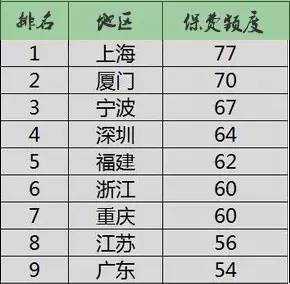

买了车，最大的两部分花销就是保养和车险，尤其是新车的保险，那么贵，我们该如何抉择。 车险包含很多险种，主要分为主险和附加险两大类，是以风险大小来划分的。三者险（第三者责任险）被归在主险内，这也是必买险种之一。
大家应该都了解三者险的作用，但每次投保都纠结，三者险应该买多少额度才合适呢？买多了浪费钱，买少了不够赔买30万？50万？万一撞了豪车估计就得赔得倾家荡产....
第三者责任险的保额分为8个档次，分别为5万、10万、15万、20万、30万、50万、100万、100万以上，封顶为5000万。
当你投保时，保险专员大多建议你购买100万档次的。用他们的话说，100万的保额也没比50万贵多少，但这年头，豪车满街跑，行人满街转，车贵命贵的年代，还是买高保额心里更踏实。 小编从网上找了一些数据，帮助大家了解一下，各地车主的三者险保额额度，也让大家做到心中有数！全国的三者险均值在40万左右，可以分为三个档次。
投保额度在50万以上的地区：
投保额度在30-50万的地区：
投保额度在30万以下的地区：
看看全国车主的真实投保数据，再想想保险专员的话，有些车主彻底蒙圈了。其实三者险就是指被保险人或其允许的合法驾驶人员在使用被保险车辆过程中发生的意外事故，致使第三者遭受人身伤亡或财产直接损毁，依法应当由被保险人承担经济责任，保险公司负责赔偿。

额度买低了，万一撞上豪车怎么办？按照所在城市的平均投保额度，真的靠谱吗？万一撞个宾利，按照上面的均值额度投保，那等于白花钱，根本不够赔。万一再撞到人，那赔偿额就更高了，三者险额度买少了，就可能倾家荡产。一个普通的工薪家庭，真心赔不起那样巨额的赔偿金啊。
看完上面的数据，再看看投保的数额，100万到底够不够赔一条人命的？死亡赔偿金是如何计算的呢？可以说是根据死者年龄、户籍类型、人均纯收入、每年的平均工资、消费水平、死者需要抚养的人数等众多因素统计而来的。通俗易懂的说，死者所在城市越发达、工资越高、赔偿金就越高。
假设死者为40岁的中年人，城市居民，下有15岁的孩子，上有70岁的父母，那恐怕100万都不够赔偿一条人命的。 车险中，除了交强险，三者险你也一定要买，保费额度也要根据所在地区等多种因素考虑购买，千万别单纯图便宜，买额度保险，万一发生意外事故，真是卖车卖房也不够赔的。 当然，安全出行是最重要的，路上要多注意安全，安全驾驶才是关键。